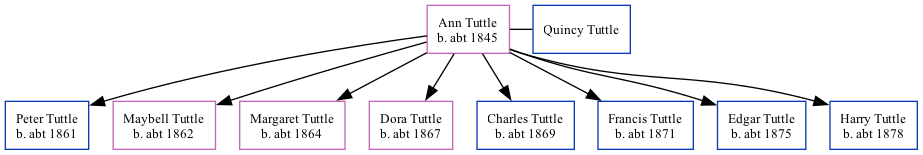

Ann Tuttle (née Tuttle) c1845 -
[ Home ] | [ Surnames Index ] | [ Family History ] was born in Pennsylvania c. 18451 and had 8 children with Quincy Tuttle: Peter, Maybell, Margaret, Dora, Charles, Francis M, Edgar and Harry. In 1880, she was living in Cherokee, Montgomery, Kansas, USA1.
Children
- Peter was born c. 1861
- Maybell was born c. 1862
- Margaret was born c. 1864
- Dora was born c. 1867
- Charles was born c. 1869
- Francis M was born c. 1871
- Edgar was born c. 1875
- Harry was born c. 1878
Citations
- 1880 United States Federal Census Ancestry.com Operations Inc (Age: 35; Marital Status: Married; Relation to Head of House: Wife)
Family Tree
Data (GEDCOM) maintained by Jay Weston Hannah, Omaha, Nebraska, USA.
Website generated by ged2site. Last updated on Jun 18, 2024.